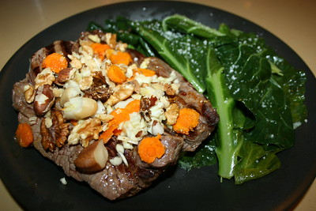

Odin’s Long-Cooked Chuck Steak and Vegetables

"Primal Steak" by kteague is licensed under CC BY 2.0 
 .
.
Recipe Details
- ⏲️ Prep time: 15 min
- 🍳 Cook time: 6 hours
- 🍽️ Servings: 4
Description
Here we have the favourite meal of the All Father himself; his long cooked chuck steak and vegetable dinner. This recipe will leave the steak tender and juicy, while taking advantage of the more cost effective cut of meat.
This meal always satisfies on the cold dark nights of the Asgardian evenings, and welcomes all who share in the meal together.
Ingredients
- 800g of chuck steak
- 200g of tomatoes (or 400g of canned chopped tomatoes)
- 1 fennel
- 1 onion
- 1/4 of a cauliflower
- 50ml of olive oil (optional)
Steps
- Add a little of the olive oil to the long cooker, put in the meat, and set it to high.
- Chop the onion and add.
- Cut the cauliflower to sizes of your choice and add.
- Chop of slice 1/3 of the fennel and add.
- Crush the tomatoes and add (or add the canned chopped tomatoes).
- Add the rest tof the olive oil and let it be for at least 6 hours.
- Serve with the rest of the fennel (chopped or sliced).